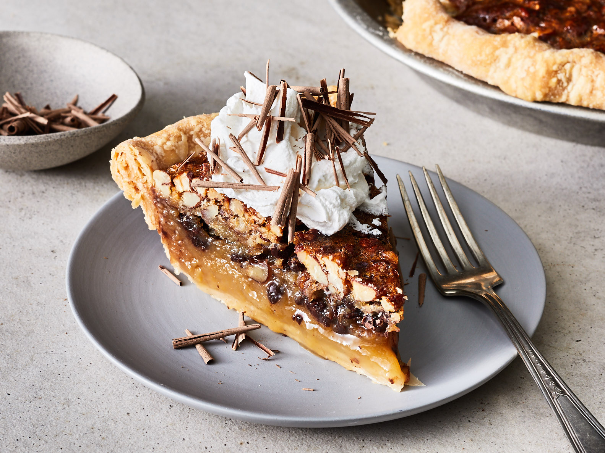

Kentucky Derby Pie Recipe

Ingredients
- 1 (9 inch) pie crust pastry
- 1 cup light corn syrup
- 1 cup white sugar
- 4 eggs
- 1 1/4 cups chocolate chips
- 1 cup chopped pecans
- 1/2 cup butter, melted
- 2 tablespoons bourbon (Optional)
- Preheat oven to 350 degrees F (175 degrees C). Press pie crust into a 9-inch pie plate.
- Beat corn syrup, white sugar, and eggs together in a bowl using an electric mixer on low speed until well blended; stir in chocolate chips, pecans, butter, bourbon, and vanilla extract. Pour mixture into the prepared pie crust.
- Bake in the preheated oven until set, 45 to 50 minutes.
Nutrition Facts
Per Serving: 694 calories; protein 7g; carbohydrates 85.5g; fat 39.1g; cholesterol 123.5mg; sodium 262mg.